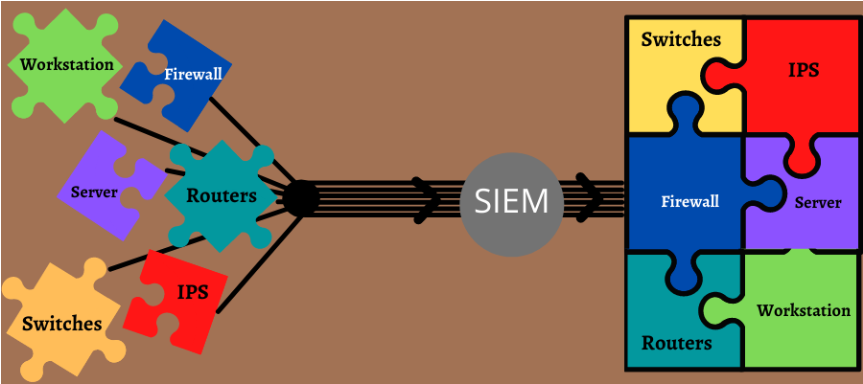

Sécurité Défensive
Sécurité Défensive#
Récapitulatif des outils principaux :
Outil |
Périmètre |
Fonctionnalités |
Protection |
|---|---|---|---|
SIEM |
SI entier |
Recueille et agrège les données générées par tous les outils de surveillances + les logs. Identifie et caractérise les incidents pour fournir alertes et rapports |
Point de collecte au centre de tous les outils de détection et applications réseau et/ou hardware pour superviser l’ensemble des évènements et alertes |
IDS |
Réseau |
Comportement similaire aux antivirus : analyse le réseau pour détecter des signatures connues via BDD update régulièrement |
Se place derrière un firewall, détecte selon des menaces connues (dans la BDD) et a une vision limitée au bordures du réseau |
IPS |
Réseau |
Analyse le réseau et les paquets, logs des alertes, peut bloquer des paquets présentant une menace |
Fonctionne avec un IDS qui lui envoie ses infos pour que l’IPS puisse agir (bloquer) si besoin |
EDR |
Endpoint |
Surveille les endpoints et bloque les menaces ayant contourné les antivirus et autres |
Base de solutions et fonctionnalités avancées de cybersécurité |
NDR |
Réseau |
Surveille du trafic réseau (couches 2 à 7) et des logs pour répondre aux menaces + utilisation de ML |
Étend les capacités de détection aux réseaux et analyse ces derniers en profondeur |
XDR |
SI entier |
EDR + surveillance Cloud, mail, Threat Hunting, réponse à incident. Capacités d’analyse étendues |
Regroupe les données venant de plusieurs sources pour améliorer globalement les capacités de détection |
MDR |
Endpoint |
EDRaaS, avec services managés 24/7 pour surveiller, atténuer, bloquer et corriger les menaces |
Allie les fonctions EDR aux compétences d’experts cyber pour du Threat Hunting, Cyberveille… |
SOAR |
SI entier |
SIEM + automatisation, capacités de réponse, IA pour prédiction de menaces futures |
données du SIEM et prend la main pour y répondre |
SIEM (Security Information and Event Management) : Logiciel qui recueille et agrège les données générées dans tout le SI d’une organisation. Sa fonction est d’identifier et catégoriser les incidents et les événements pour fournir des rapports sur les incidents de sécurité et envoyer des alertes si l’analyse montre une activité anormale. Capacités d’agrégation de fichiers de log, alertes automatisées, détection de menaces, filtrage et stockage des données, visualisation, conformité.

IDS (Intrusion Detection System) : Analyse le trafic réseau pour détecter des signatures correspondant à des cyberattaques connues. C’est un système de surveillance, il ne peut pas modifier ou toucher aux paquets, il se contente de log des alertes.
IPS (Intrusion Prevention System) : Analyse le réseau et les paquets pour de la détection de comportement anormal. C’est un système de contrôle, il peut bloquer des paquets en fonction de leur contenu (comparaison avec des menaces connues) à la manière d’un firewall, ainsi que log son activité et ses alertes.
EDR (Endpoint Detection Response) : Logiciel pour surveillance des terminaux (et non du réseau). Analyse les usages des terminaux notamment via l’analyse comportementale (pour identifier ceux déviant d’une norme). Surveillent l’exploitation de failles de sécurité. Permet de se protéger contre les attaques inconnues en analysant les comportements suspects.
NDR (Network Detection and Response) : Complémentaire aux outils EDR et SIEM (inutile sans eux). Apporte une visibilité étendue niveau réseau pour élargir le contexte de détection des comportements d’attaquants. Se concentre sur les interactions entre les différents nœuds du réseau.
XDR (eXtended Detection and Response) : Permet de regrouper des données provenant de sources différentes. Surveille les Endpoint, les emails, serveurs et le Cloud. Augmente globalement les capacités de détection pour une réaction plus rapide face aux menaces.
MDR (Managed Detection and Response) : Solutions externes gérées par un fournisseur de services de cybersécurité. Permet une protection constante de leur système d’information avec une surveillance en continu. Inclu généralement la détection, l’analyse, l’investigation et la réponse.
SOAR (Security Orchestration Automation and Response) : Fait référence à 3 capacités logicielles clés : la gestion des cas et des workflow, l’automatisation des tâches et la centralisation de l’accès, de l’interrogation et des renseignements sur les menaces.
SIRP (Security Incident Response Platform) : Il peut s’agir d’un outil de gestion de tickets, d’un tableau type kanban ou de n’importe quel autre moyen de communication. Sert d’interface avec les autres equipes de l’organisation pour communiquer sur :
Les actions à efffectuer pour résoudre un incident
Les demandes pour mettre en place la détection
Le suivi des mesures prises en urgence
La communication avec les équipes métier (contacts, relances, etc.)
WAF (Web Application Firewall) : Détecte des menaces dans le contenu de requêtes HTTP et protège donc les sites web uniquement.